OPHELIA
Captured in the Clown's Smile
Suasana pasar selalu sama. Penuh dengan suara bising akan penjual yang menjajahkan barang dagangannya dengan berteriak memanggil siapapun yang lewat, suara tapak kaki keledai dan kuda yang sedang membawa hasil belanjaan orang-orang, suara bersautan yang saling melemparkan harga, dan suara halus dari minyak di penggorengan yang bertemu dengan lauk pauk. Bau sedap dan tidak sedap seolah bercampur menjadi satu, bau dari sampah-sampah yang tergeletak tanpa ada yang peduli, menyengat dari berbagai sisi, bercampur dengan bau masakan yang baru saja dibuat.
Diantara dunia yang begitu sibuk, seorang gadis menorehkan cat hitam pada selembar canvas putuh yang tak lagi putih. Bisingnya dunia tak lagi menganggu baginya. Seolah semua suara itu hanyalah alunan lagu sumbang yang menghiasai harinya dengan corak hitam. Sama persis seperti apa yang sedang ia lukis. Suara dengung mesin mengganggu konsentrasinya. Gerakan tangannya yang lihai terhenti. Ia menoleh. Langsung mendapati beberapa pemuda melihatnya dari depan gerainya. Tatapan yang mereka layangkan jelas bukanlah tatapan seorang pelanggan yang hendak membeli barang darinya.
"Oh, Ophelia sayang. Kau yang hanya diam-pun terlihat begitu indah." Salah satu dari mereka menatapnya dengan intens.
Rambut merah muda pudar diikat tinggi, berpadu dengan netra merah pekat, kayaknya anggur merah crimson yang hanya dapat ditemui di perayaan besar, indah, namun juga memabukkan. Itulah pandangan orang-orang terhadap gadis itu. Ophelia. Gadis kebanggaan kota, dipuja karena kecantikannya yang tiada dua. Hingga membuat setiap pria di kota itu jatuh cinta padanya. Nama gadis itu, Ophelia, Ophelia sang pembuat tembikar dan pelukis terkenal di kota.
Fokus Ophelia bukanlah para lelaki itu. Ia mengedarkan pandangannya. Suara bising halus terus terdengar di telinganya. Mengganggu ketenangannya.
"Ophelia, apa yang sebenarnya kau cari? Aku ada disini?"
Salah satu lelaki jengkel dengan tingkah acuh gadis itu. Ia mencoba untuk masuk ke dalam gerai, namun urung begitu suara deru mesin terdengar nyaring dari langit. Spontan, semua kegiatan di pasar terhenti. Satu persatu orang keluar dari gerai untuk melihat ke arah langit. Namun tidak dengan Ophelia. Gadis itu hanya duduk terpaku. Matanya menyoroti ke arah orang-orang di depan sana.
Sementara di langit, sebuah kapal terbang besar melayang di atas mereka. Suara deru mesin itu masih terdengar, disusul dengan suara ledakan keras. Tidak, kapal itu tidak meledak, melainkan bagian bawah kapal, sebuah balon besar di bawah kapal meledak. Menghamburkan jutaan kertas ke seluruh kota. Suara alunan terompet terdengar nyaring, disusul dengan pukulan drum, sebuah instrumen yang langsung mengingatkan setiap orang akan suasana di dalam sirkus.
Orang-orang menatap langit, mata mereka memicing. Seseorang berdiri di ujung kapal. Tangannya terentang lebar. "Kami Twilight Troupe akan mengadakan pertunjukan di akhir Minggu ini! Siapapun boleh datang! Tidak ada biaya masuk!"
Seruan itu langsung membuat suasana heboh di bawah. Kapal terbang itu mulai bergerak kembali. Orang-orang saling melihat dan mulai membicara kejadian yang baru saja terjadi. Mereka sangsi pada awalnya, namun begitu selembaran kertas yang berjatuhan itu dibaca, sebuah nama yang begitu terkenal membuat mereka semua bersorak.
"Kita dapat melihat sirkus!"
"Akhirnya Twilight Troupe datang ke kota kita!"
Begitu kira-kira seruan orang-orang. Suasana mulai ramai kembali. Beberapa antusias menantikan pertunjukan yang mungkin akan jadi pertunjukan sirkus terakhir di kota mereka, dan sebagian kembali pada rutinitas awal. Menjajahkan barang dagangan mereka.
Begitupun Ophelia. Ia kembali melukis. Kali ini dengan lebih tenang, setelah suara deru mesin halus itu tak lagi ia dengar. Meski suara laki-laki yang tadi sempat terhenti kembali mengalun ditelinganya. Sampai kapan mereka akan mengoceh? Ophelia menghela napas. Ia memejamkan mata. Menaruh kuasnya dengan keras.
"Akhirnya kami menarik perhatianmu, ya?"
Ophelia menoleh. "Kalian menganggu usahaku. Pergilah." Gadis itu menggerakkan kursi rodanya dengan tangan. Semakin ke dalam gerai.
Salah satu pria geram. "Kenapa, sih, kau itu selalu saja menolakku!?" serunya. Ia hendak menerobos kali, namun kembali terhenti begitu suara nyaring terdengar di belakang kalian. "Apa yang kalian lakukan?!"
Pria itu menoleh. Melihat sosok berambut pirang terang dengan netra senada dan luka lebar di bagian mata kanannya berkacak pinggang. Sosok perempuan itu menatap mereka tajam. "Apa kalian sadar dengan apa yang kalian lakukan? Kalian mengganggu seseorang yang sedang berdagang. Kalian bisa aku laporkan ke petugas keamanan!" tekannya. Ia menunjuk ke arah para pria satu persatu. "Aku yakin petugas keamanan akan senang menerima mahkluk seperti kalian!"
"Apa sih masalahmu?!"
"Apa?" Perempuan itu menyeringai. Ia mendekat dan menekan dada pria yang berbicara padanya dengan telunjuk. "Kau mengganggu orang-orang yang hendak membeli tembikar. Memang kau mau membeli barang padanya? Jika hanya mau menghalangi, lebih baik enyah!"
"Sialan, dasar buruk rupa! Sudahlah, kita pergi saja."
Perempuan berambut pirang terang itu masuk ke dalam kedai dan menuju ke lukisan yang ada ditengah. Mulutnya langsung membulat. Lukisan itu membentuk sebuah gambar daratan dengan gelombang-gelombang air di setengah gambarnya. Ia langsung menatap ke arah sang pelukis. "Apa ini, Ophelia?"
"Laut."
"Laut? Memang kau pernah melihat laut?"
"Tidak. Aku hanya membayangkannya dari ucapan seorang pria."
"Ah begitu ... Ah! Aku punya hal yang lebih penting!" Netra kuningnya penuh dengan binar antusias, mendekat ke arah Ophelia dan mengangkat kertas di tangannya. "Kau sudah tahu soal ini?"
Ophelia menoleh. Melihat gambar di kertas itu. "Tentu saja, Amber. Berita itu menggema di atas kita seolah menjadi berita dari langit. Siapa yang tidak tahu." Ophelia tersenyum ke arah temannya.
Amber, gadis itu mengambil kursi dan duduk di dekat Ophelia. "Benar. Aku lupa. Jadi, mau melihatnya bersama? Kau dengar bukan, ini gratis. Siapapun bisa melihatnya," tutur Amber. Ia melihat Ophelia penuh harap.
Namun, bukan anggukan yang diterima Amber. Ophelia justru menggeleng. "Terlalu ramai pastinya. Aku tidak bisa," jawabnya.
"Ophelia ...." Amber melihat sekeliling. Ia menepuk pundak Ophelia pelan. "Apa kau tahu kenapa pertunjukannya gratis?" Tatapannya bertemu dengan lukisan yang dipajang. Senyumnya langsung mengembang. "Katanya, mereka akan mengambil benda paling berharga di kota itu sebagai imbalan," umbarnya.
"Benda berharga?"
"Ya! Kudengar dari seorang pedagang, Twilight Troupe sudah datang ke kotanya dan mengambil sebuah lukisan sebagai imbalan, dan sekarang, pelukis itu, yang dulunya miskin menjadi seorang pelukis terkenal. Jika mencari sesuatu yang berharga, tentu saja lukisan Ophelia adalah pilihan yang bagus?" Ia menunjuk ke arah salah satu lukisan, lalu menuju ke lukisan lainnya. "Semua ini adalah mahakarya."
Suara kekehan Ophelia langsung membuat Amber tersenyum lebar. "Akhirnya kau tertawa." Ucapan itu langsung menghentikan suara Ophelia. Ophelia memalingkan wajahnya. "Ada lebih banyak hal berharga di kota ini. Lukisanku bukanlah hal yang begitu berharga sampai harus dijadikan sebagai imbalan, bukan?" Ophelia memutar roda kursi rodanya.
"Ehhhh, kau hanya malu, bukan, Ophelia?"
"Tidak."
Amber terus mengikuti Ophelia sambil menggoda kawannya itu.
"Aku akan berjalan-jalan di kota. Mungkin pulang malam jadi jangan tunggu aku." Pria berambut raven itu berjalan meninggalkan ruangan. Ia melepas jaket bulunya dan melemparnya ke arah kursi di dekat sana. Mengambil jubah dan keluar dari kapal terbang yang kini mendarat di tanah.
Netra kelabu itu langsung menyorot sekeliling. Mencari tujuan kemana ia akan menjelajah kota sebelum nantinya akan melakukan pertunjukan. Ya, pria itu adalah salah satu anggota dari Twillight Troupe, atau lebih tepatnya, sang pemimpin dan dijuluki sebagai Clown. Tak pernah ada yang tahu siapa nama aslinya, atau dari mana ia berasal, bahkan bagi anggota kelompok itu sendiri. Mereka hanya menyebut diri masing-masing sesuai dengan keahlian mereka.
Tujuannya kali ini adalah pasar. Tempat yang menjadi jantung sebuah kota. Ia melangkah menjejakkan kaki di antara kios-kios yang ada disana, mulai dari kios panganan, bahan masakan, ataupun buah, dan perabotan, semua terjual disana. Namun, tak ada satupun yang menarik perhatian Clown. Pria itu menghela napas. Helaian rambut putihnya terlihat keluar dari jubahnya. Matanya masih menyoroti sekeliling.
"Mungkin, karena aku sudah mencuri banyak hal, aku sudah tidak tertarik pada apapun." Gumaman itu dibarengi dengan helaan napas panjang untuk kedua kalinya.
Clown berbalik, ia memutuskan untuk kembali ke kapal terbangnya. Langkah demi langkah, Clown hampir keluar dari wilayah pasar. Hingga satu benda yang dibawa oleh sepasang suami istri yang tampak seperti pedagang keliling menarik perhatiannya. Sebuah guci tembikar dengan warna dan ukuran yang unik. Clown spontan mendekat. Ia memegang tangan si suami dengan kepala tertunduk. Enggan menunjukkan wajahnya.
"Maaf, bisakah Anda mengatakan dimana Anda mendapatkan tembikar ini?"
Ditengah keterkejutan, sang suami mengangguk dan menyebutkan nama toko yang sempat ia datangi tadi. Tanpa banyak bicara lagi, Clown menganggukkan kepalanya dan berbalik. Memasuki lagi area pasar sesuai dengan arah tunjuk yang di berikan. Bayangannya dipenuhi dengan wujud tembikar yang ia lihat hanya sebentar itu. Warna-warna yang bercorak dengan ukiran-ukiran yang intens, dan bentuk yang tidak biasa. Semua itu masih terbayang jelas dipikiran Clown.
Langkah pria berambut raven itu melambat saat mencapai sudut pasar yang lebih tenang. Papan kayu sederhana di atas sebuah gerai menarik matanya: La beauté intemporelle—Keindahan yang Abadi. Nama yang ambisius untuk sebuah toko kecil di pinggiran pasar yang berdebu.
Clown masuk ke dalam bayang-bayang gerai. Seketika, hiruk-pikuk pasar di belakangnya seolah teredam oleh dinding-dinding kayu. Di sana, seorang gadis duduk membungkuk di atas roda putar. Jemarinya yang ramping bergerak dengan ritme yang hampir menyerupai tarian, membelai gumpalan tanah liat basah dengan kelembutan yang menyakitkan. Suara mesin putar yang lirih mendengung, menciptakan harmoni yang aneh di telinga Clown.
Pria itu terkesima. Ia telah mencuri banyak hal di dunia ini—permata, rahasia, hingga nyawa—namun ia belum pernah melihat seseorang menciptakan sesuatu dengan begitu tekun seolah dunianya hanya terdiri dari tanah dan jemari itu.
Saat gadis itu akhirnya mendongak untuk menyeka keringat di keningnya, Clown membeku.
Tudung jubahnya ia tarik lebih dalam, namun matanya tetap terkunci pada wajah di hadapannya. Netra gadis itu bukan hitam, bukan pula biru seperti langit yang baru saja ia belah dengan kapal terbang. Matanya merah pekat, menyerupai anggur crimson yang paling murni, atau permata ruby yang baru saja dibasuh air. Indah, namun menyimpan kejauhan yang tidak terjangkau.
"Bukan hanya karyanya yang indah," bisik Clown pada diri sendiri, suaranya nyaris hilang ditelan dengung mesin. "Penciptanya jauh lebih berbahaya bagi jantungku."
Ia memperhatikan bagaimana bibir merah muda gadis itu terkatup rapat dalam keseriusan, dan bagaimana kulit pucatnya tampak kontras dengan tanah liat yang gelap. Gadis itu kembali menunduk, memutuskan kontak visual yang bahkan tidak ia sadari.
Clown mundur satu langkah, membiarkan dirinya kembali ditabrak oleh arus orang yang lalu lalang, namun pikirannya tertinggal di dalam gerai itu.
Dua orang pria menambraknya dari belakang, kemudian mendekat ke arah gerai. Clown menatap dengan intens. Bau parfum yang pekat menguar dari kedua pria itu, jelas bukan maksud untuk membeli saja, namun kedua pria itu juga bermaksud untuk menggoda. Meski bau yang menyengat menghilangkan aroma wangi, gadis disana tidak menghiraukan sama sekali.
Salah seorang menumpu lengan bawahnya ke arah meja gerai. Matanya tertuju pada sosok merah muda pudar dengan balutan baju sederhana. Senyumnya mengembang. Ia melirik ke arah pria disebelahnya, berdehem sebelum akhirnya berucap, "Hei, Ophelia. Kami datang ingin membeli lukisanmu."
Gadis itu tak bergeming. Tindakannya yang acuh selalu dapat mengundang percikan api di dalam diri pria yang sedang mengajaknya bicara. Kesal, salah seorang pria menggebrak meja.
Pria disebelah menghentikannya. "Tenanglah. Kita kesini hanya untuk membeli lukisan yang bisa dipajang di aula pesta kita nanti. Jangan marah karena hal remeh."
"Cih."
"Ophelia, seperti yang kau dengar, kami disini berniat untuk mengadakan pesta. Rasanya ada yang kurang di aula pesta, jadi kami datang untuk melengkapinya dengan lukisanmu. Maukah kau membantu kami memilih lukisan?"
Dan sekali lagi, Ophelia hanya fokus pada kegiatannya. Tanah liat yang sebentar lagi berbentuk sempurna terus ditekan dengan lembut. Ia melirik pada dua pemuda disana. "Ambil dan bayar yang kalian mau. Harga ada dibelakang canvas."
Clown tersenyum.
"Ophelia," ia mengecap nama itu di lidahnya.
"Sepertinya, aku sudah menemukan benda paling berharga di kota ini."
Clown mulai menghilang, menyatu dengan hiruk-pikuk pasar yang semakin ramai menjelang sore hari.
Matahari baru saja tenggelam di ufuk barat, meninggalkan sisa warna jingga yang segera ditelan gelap. Cahaya kekuningan dari lampu lilin mulai berkedip di jendela-jendela rumah, namun alun-alun kota seolah menolak untuk padam. Sebuah tenda raksasa berdiri kokoh di sana, bermandikan cahaya lampu yang benderang. Di atasnya, sebuah kapal terbang besar melayang rendah tanpa suara, diam mematung layaknya pemangsa yang sedang mengintai dari langit.
Di bawahnya, kerumunan orang dari penjuru kota berdatangan, berdesakan demi sejumput tiket masuk. Wajah-wajah mereka berseri, penuh antusiasme yang haus akan keajaiban. Mereka tidak tahu kegelapan macam apa yang sedang menanti di balik tirai beludru merah itu.
Di balik panggung, Clown berdiri mematung sembari merapikan kancing di pergelangan tangannya. Senyumnya merekah singkat, tipis, and penuh obsesi. "Kali ini, dia yang akan melihatku. Akan kupastikan tatapannya tidak teralihkan dariku sedikit pun."
Berbeda dengan gairah Clown yang meluap, atmosfer di sekitarnya justru membeku. Sang Musician menatap Clown dengan pandangan sangsi, lalu melirik kedua rekannya yang lain. "Apa dia baik-baik saja?"
Knife Thrower hanya mendengus, jemarinya lincah mengasah belati dengan gerakan yang membuat bulu kuduk berdiri. "Apa peduliku? Paling-paling, pemimpin kita sedang membayangkan bagaimana cara mencuri bayaran untuk pertunjukan ini," sahutnya dingin, tak acuh.
"Memangnya sudah ada targetnya? Yang kulihat, dia hanya berjalan-jalan tanpa arah selama berhari-hari. Benar, bukan, Marionette?"
Sang Puppeteer hanya mengangguk pelan sembari mengangkat bonekanya. "Ya, benar," bisiknya lirih, menjadi titik akhir percakapan mereka.
Tiba-tiba, Clown menjentikkan jari dari kejauhan—sebuah isyarat bahwa waktu bersantai telah habis. Detik berikutnya, suara lampu gas yang mati terdengar serempak. Alun-alun yang tadinya bising mendadak disergap sunyi yang mencekik. Tak lama, sebuah lampu sorot tunggal menghujam dari arah kapal terbang di atas tenda, menyinari lubang besar di puncak panggung.
Di titik cahaya itu, Clown berdiri. Ia mengenakan topeng putih porselennya, membetulkannya dengan gerakan kaku yang janggal. Di balik topeng, ia menarik napas dalam. Jarinya menjentik tiga kali, dan seketika musik yang megah meledak, mengalun hingga ke pelosok kota. Pertunjukan berdarah itu resmi dimulai.
Asap ungu merayap di lantai panggung, menebal seiring jatuhnya kelopak bunga hitam dari langit-langit tenda. Di tengah hiruk-pikuk melodi, Knife Thrower beraksi, ia melesat bagai penari, belatinya membelah kelopak mawar yang berguguran di udara. Ia melemparkan pisau-pisaunya ke arah penonton—membuat mereka terpekik ngeri—hanya untuk melihat senjata perak itu menancap sempurna pada target di atas kepala mereka, tepat mengikuti dentuman nada dari Sang Musician.
Puppeteer muncul di tengah kepulan asap, mengendalikan boneka-bonekanya dengan kelincahan yang mustahil. Clown tidak tinggal diam, ia menari bersama boneka-boneka itu, tubuhnya meliuk mengikuti benang-benang tak kasat mata. Musik mencapai puncaknya, suasananya kian memanas hingga tak ada seorang pun yang berani berkedip.
Lalu, tibalah momen itu. Clown melepas topengnya, melompat tinggi, dan bergelantungan di atas tali yang melintang. Netra kelabunya langsung menyambar kursi kayu berlapis emas yang telah ia siapkan secara khusus di baris terdepan.
Rahangnya mengeras seketika. Kursi itu kosong.
Tak ada gaun cantik, tak ada rambut merah muda pudar, tak ada tatapan kagum dari Ophelia. Gadis itu tetap tidak datang ke tempat yang telah ia siapkan dengan sempurna.
Senyumnya masih merekah, meski ujung bibirnya bergetar hebat. Gemuruh di dadanya kini bukan lagi gairah, melainkan kemarahan yang meluap. Lagu yang tadinya terdengar megah, kini seolah berubah menjadi tawa ejekan yang mengolok-olok kegagalannya.
Dengan kode tajam, Clown memerintahkan Sang Musician mempercepat tempo. Piano menderu liar. Knife Thrower menangkap sinyal bahaya itu. Lemparan belatinya kini melesat lebih tipis, hampir menyerempet kulit penonton, menciptakan horor yang disangka seni. Clown menghentakkan kakinya ke panggung dengan penuh kebencian, meluapkan seluruh kesalannya ke dalam setiap gerakan agresif.
Sebagai penutup, Knife Thrower melemparkan semua pisaunya ke langit, membentuk lingkaran logam yang mengancam. Clown melompat di tengah hujan belati itu, memutar tubuhnya di udara, sebelum mendarat sempurna dengan tangan terentang. Kembang api perak meledak dingin, mengakhiri simfoni amarah tersebut.
Riuh sorakan memecah kesunyian. Ribuan orang berdiri, meneriakkan nama Twilight Troupe dengan penuh pemujaan. Ketiga anggota lainnya tersenyum bangga, namun Clown justru tertunduk. Ia mengenakan kembali topeng putihnya, menyembunyikan kenyataan pahit bahwa meski ia telah menaklukkan hati seluruh kota, ia tetap gagal menyentuh satu hati yang paling ia inginkan. Tangannya terkepal erat, ia merasa terhina.
Jauh dari kebisingan itu, di sebuah dapur kecil yang sunyi, seorang gadis duduk tenang di kursi rodanya. Ia baru saja memasukkan adonan ke dalam oven, membiarkan aroma manis dari kayu manis dan roti hangat membelai indranya. Tatapan matanya yang merah fokus pada panggangan yang mengeluarkan uap panas, mengagumi kebahagiaan sederhana yang ada di depan matanya.
Ia tersenyum sangat tulus, sama sekali tidak menyadari bahwa di bawah cahaya lampu kota, seseorang sedang hancur karena meratapi ketidakhadirannya.
"Pertunjukan tadi intens sekali." Knife Thrower mengeluh. Ia merenggangkan otot bahunya.
Musician mengangguk setuju. Ia mulai menanggalkan kostumnya. Dirinya teringat akan sesuatu. "Tiba-tiba saja, pemimpin meminta kita menaikkan performa. Dia terlihat kesal sekali."
"Benar." Suara Puppeteer yang samar mengalun disusul dengan sunyi. Mereka bertiga sibuk berganti pakaian dan menghapus riasan tebal yang tadi digunakan. Marionette diarahkan duduk menghadap meja rias yang seharusnya digunakan untuk Clown. Knife Thrower yang ada disebelah tempat duduk itu melihat ke aran boneka yang tampak sedikit menyeramkan itu. "Apa yang kau lihat?" tanyanya dengan tajam.
Puppeteer dengan cepat mengangkat bonekanya dan mencicit, "Aku hanya melihat ... Pe-pemimpin kita tidak ada ditempatnya."
Musician langsung menoleh ke arah kursi disana. "Kau benar. Kemana dia? Mengambil bayaran? Wah ... Dia semangat sekali."
Mereka bertiga melanjutkan kegiatan membersihkan wajah. Tanpa sadar kalau pemimpin kelompok mereka pergi bukan dengan rasa semangat. Langkah pria itu bukan ringan, seperti pada saat dia pertama kali datang. Kali ini, langkahnya terasa lebih berat, lebih cepat, dan penuh dengan amarah. Kostumnya yang megah bahkan masih melekat di badannya. Begitupun dengan riasannya. Ia hanya membalut kostumnya dengan jubah hitam. Berjalan menuju tempat yang ia yakini terdapat seseorang yang sejak tadi ia cari.
Napasnya memburu. Ia berdiri tepat di depan toko roti milik Amber. Netranya melihat sekeliling. Suasana temaram, hanya ada beberapa lampu yang berjarak cukup jauh. Namun, dari dalam dapat terlihat setitik cahaya. Clown memasuki gang yang ada disebelah toko.
Di tengah gelap, jubahnya menyatu dengan sekitar, menjadikannya tak terlihat diantara kegelapan yang ada. Clown sampai di bagian belakang. Sosoknya berdiri dibawah bayangan rumah, sementara tatapannya hanya lurus, tertuju ke arah bingkai jendela yang mengepulkan uap hangat.
Di dalam sana, dunia terasa berbeda dengan apa yang Clown tahu. Ia melihat gadis itu, gadis yang sudah ia perhatiakan sejak awal, Ophelia. Gadis itu tidak sedang menderita karena melewatkan pertunjukan spektakuler yang baru saja berlangsung, ataupun terlihat sedang kesulitan. Gadis justru sedang tertawa. Sebuah tawa yang bahkan tak pernah Clown lihat selama ia memperhatikannya. Di sebelahnya, Amber menumpuk loyang yang telah dipakai. Ia tampak sedang bercerita pada Ophelia dengan senyum ringan. Kehangatan dari hubungan akrab mereka terasa begitu alami, penuh kebahagiaan dan rasa syukur. Sesuatu yang rasanya berbanding terbalik dengan kemewahan dan kemegahan yang selama ini Clown jalani. Kehidupan itu seakan tak membutuhkan lampu sorot, kostum indah dengan kain terbaik, ataupun tepuk tangan penonton yang menyukainya. Mereka justru tampak sederhana dan cukup.
Perbedaan itu terasa seperti palu besar yang memukul dada Clown. Rasa hina yang tadi hinggap di dadanya berubah menjadi kecemburuan. Tawa Ophelia yang terasa begitu ringan justru seakan menjadi anak panah yang menancap di dadanya, satu persatu, melukai harga diri seorang Clown tentang pandangan kehidupan. Setiap senyum yang Ophelia berikan pada Amber justru terasa seperti racun baginya. Tangannya mengepal erat. Kuku-kuku dari balik sarung tangan hitam itu seolah bersiap merobek kain.
Amarah itu berubah menjadi aura hitam. Terasa begitu pekat, dan mungkin, jika manusia biasa berada di dekatnya, orang itu akan pingsan. Aura yang tidak bisa dihentikan itu bahkan terasa menembus dinding dapur.
Di dalam sana, gerakan Ophelia yang sedang mengaduk adonan terhenti. Ia menoleh ke sekeliling. "Apa ini?" gumamnya. Tengkuknya diusap pelan guna meminimalisir rasa merinding. Ia menoleh kembali ke arah sekitar, ia merasa tidak nyaman, seolah ada sepasang mata yang menatapnya dengan tatapan intens, seperti akan menghunuskan pedang ke arahnya. Netra crimson-nya terarah pada jendela. Ia meletakkan adonan itu di meja dan memutar roda kursi rodanya dan bergerak ke arah jendela.
Tak ada yang bisa ia lihat. Hanya halaman yang langsung terhubung dengan bagian belakang rumah orang lain. Namun semuanya terlihat hitam tanpa ada penerangan selain dari cahaya bulan.
Ophelia menyipitkan matanya. Pandangannya tertuju pada sesuatu yang tadinya tak ada disana. Di pinggiran jendela, seutas kain tersangkut di paku, bergerak seirama dengan angin malam itu. Saat kain yang terlihat halus itu berkibar karena angin, setangkai bunga berwarna merah darah terlihat di bawahnya. Bunga itu justru tampak sangat kontras dengan kain putih diatasnya, seolah menjadi cipratan darah yang sudah mengering diantara putihnya kain.
Ophelia mengeratkan tangannya spontan. Jantungnya berdegup kencang tanpa ia minta.
Amber melihat Ophelia dengan heran. Ia menaruh lap keringnya dan menghampiri kawannya itu. "Ophelia, ada apa?" Amber memecah keheningan yang ada. Ia mengikuti arah pandang Ophelia. "Kain?"
Amber membuka jendela. Begitu udara luar masuk, aroma parfum yang tajam, dingin, dan sedikit berbau tembaga menyengat hidung mereka. Dengan hati-hati, Amber mengambil kain dan bunga itu lalu membawanya masuk. Ia melihat ke arah Ophelia lalu pada bunga di tangannya. Bunga itu tampak begitu sempurna, kelopaknya tersusun sangat rapat dan rapi, namun keberadaannya di sana terasa salah. Seolah bunga itu baru saja dipetik dari sebuah dunia yang penuh kekerasan dan kemewahan, lalu dibuang begitu saja sebagai peringatan.
"Kau ... Tahu ini bunga apa?"
Ophelia mengangguk. Ia menarik napas dengan gemetar. "Ranunculus. Aku pernah mendapatkan bunga seperti ini dari seseorang ..." Suaranya gemetar. "Tapi tidak dengan warna yang ... Seperti darah." Ucapan terakhirnya lebih terasa seperti bisikan.
Amber memegang kain itu. Terasa halus dan lembut, seolah terbuat dari sutra yang begitu mahal. Sesuatu yang tidak cocok dengan kota mereka. Baik Amber maupun Ophelia kembali melihat ke arah jendela. Suasana hangat yang tadi terasa berganti dengan ketakutan. Ophelia memejamkan mata, ia tak tahu siapa orang yang sudah meninggalkan rasa ketakutan di dapur hangat itu. Namun kepalanya kini penuh, seolah ia dapat mendengarkan dentuman musik yang nyaring, terasa megah dan begitu asing baginya.
Dari kegelapan yang jauh di dalam gang, Ophelia seakan melihat kilatan putih porselen yang kemudian menghilang, bersatu dengan kegelapan, bersatu dengan ketakutan yang muncul akan rasa waspada yang tidak ada tujuannya.
Hari berikutnya tiba. Meski kengerian malam sebelumnya masih membekas seperti kabut dingin, Ophelia tetap membuka gerainya. "La Beauté Intemporelle", sebuah ruang kecil di sudut pasar yang menjadi saksi bisu perjuangannya. Di sana, keindahan lukisan berpadu dengan seni tembikar yang rapuh—semuanya adalah manifestasi dari jiwa Ophelia yang ia tuangkan melalui jemari rampingnya demi menyambung hidup.
Karya-karyanya selalu memancarkan binar cerah, seolah ia ingin mengajak siapa pun yang masuk ke sana melupakan sejenak betapa abu-abunya dunia luar.
Siang itu, Ophelia tengah bergulat dengan tanah liat. Di atas mesin putar yang berderit pelan, ia mencoba memandu gumpalan tanah itu menjadi bentuk yang simetris. Namun, konsentrasinya buyar. Gerakan tangannya goyah, membuat dinding guci yang ia bangun melengkung tidak beraturan ke dalam. Ia menghela napas, menyandarkan punggungnya pada sandaran kursi roda yang kaku. Kejadian semalam kembali berputar di kepalanya.
"Sebenarnya, apa yang terjadi? Kain dan bunga itu ..." gumamnya lirih. Ia masih bisa merasakan tekstur kelopak ranunculus yang rapat itu di dalam ingatannya. "Warnanya terlalu pekat ... seolah bunga itu telah meminum darah."
"Nona?"
Panggilan itu memecah lamunannya. Seorang wanita paruh baya berdiri di depan gerai dengan binar kagum. Ophelia segera mengulas senyum ramah—topeng profesional yang ia pakai setiap hari—lalu memutar roda kursi rodanya dengan gerakan terlatih untuk mendekat. "Ada yang bisa saya bantu, Bu?"
"Aku sudah lama memperhatikan geraimu dari jauh. Semuanya tampak begitu indah, aku ingin melihat lebih dekat."
"Silakan, Anda boleh melihat-lihat sepuasnya," jawab Ophelia lembut.
Saat wanita itu mulai menelusuri setiap sudut gerai, Ophelia berbalik hendak membersihkan tangannya yang berlumuran tanah liat. Namun, langkah terhenti. Punggungnya mendadak terasa panas, seolah ada cahaya matahari yang dipusatkan tepat di tengkuknya. Buku kuduknya meremang hebat, seolah menjadi tanda kalau ia sedang diawasi. Semuanya terasa lebih intens dari biasanya. Ophelia memegang tengkuknya.
Di seberang jalan, tersembunyi di balik bayangan kanopi toko perhiasan, Clown memperhatikan dengan kekehan yang tertahan. Netranya menyipit, membedah setiap inci sosok Ophelia dari kejauhan dengan intens, seolah tatapan itu akan berubah menjadi sentuhan yang bersifat fisik. "Ah ... tengkuknya jadi kotor karena jemari itu. Harusnya dia lebih berhati-hati merawat dirinya," bisiknya halus, suaranya hilang ditelan kebisingan pasar.
Clown bangkit dengan keanggunan seorang predator. Ia tidak ingin membuat "buruan"-nya sadar terlalu dini. Pria itu melangkah pergi, namun pikirannya tetap tertinggal di gerai itu, terikat pada sosok gadis yang terus-menerus memancing rasa cemburunya.
Tujuh hari berikutnya berubah menjadi periode pengintaian yang sistematis. Clown berubah menjadi momok yang tak terlihat namun kehadirannya merayap di bawah kulit Ophelia. Ia belajar mencintai kegelapan yang menyelimuti kota, karena di sanalah ia bisa menjadi bayangan yang paling setia bagi Ophelia.
Clown kini telah menghafal ritme hidup gadis itu layaknya sebuah partitur musik yang melelahkan. Ia mengamati bagaimana Ophelia memutar kursi rodanya keluar rumah pada pukul tiga pagi yang membeku—rumah yang juga ia bagi sebagai panti asuhan. Clown melihat bagaimana gadis itu berjuang mengaitkan kantung-kantung belanjaan pada kursi rodanya di jam empat pagi, mendorong rodanya di atas jalanan batu yang kasar dengan napas yang memburu.
Ia mengawasi saat Ophelia mengurus makan anak-anak dengan sisa energi yang ada, sebelum akhirnya berangkat ke pasar di jam lima. Selama berjam-jam, Clown melihat Ophelia melukis, melayani pembeli, dan dengan dingin mengabaikan setiap pria yang mencoba merayunya. Pukul empat sore, saat toko ditutup, perjuangan Ophelia belum usai. Ia akan menghabiskan waktu di tempat pembakaran tembikar yang panas dan pengap hingga pukul sembilan malam.
Puncaknya, Clown akan mengikuti siluet kursi roda itu menuju rumah Amber. Di sana, Ophelia akan membantu membuat kue hingga pukul sebelas malam. Selama tujuh hari itu, Clown berdiri di luar jendela, memperhatikan bagaimana cahaya lilin menerpa wajah Ophelia yang kian pucat karena kelelahan.
Satu hal yang membuat kemarahan Clown semakin menumpuk, selama pengintaiannya, ia hampir tidak pernah melihat gadis itu benar-benar duduk untuk makan atau menutup mata untuk beristirahat. Ophelia bagai mahakarya yang sedang menghancurkan dirinya sendiri demi orang lain, dan bagi Clown, itu adalah sebuah penistaan yang tak termaafkan.
Clown menghela napas, merapikan jabot rendanya di depan cermin. Wajahnya yang putih bersih tampak kesal. Tujuh hari mengintai ternyata belum cukup meredakan cemburu di dadanya. Dengan jemari terbalut sarung tangan hitam, ia menyentuh pipinya sendiri.
“Jika saja aku yang merawatnya, kulitnya pasti bisa sebagus ini. Ah, tidak, kulit Ophelia sudah indah, hanya terlalu kelelahan. Bagaimana bisa manusia bekerja tanpa istirahat?“ Clown berdecak, lalu menyambar jubah di kursi.
“Ketua.“
Netra kelabu Clown terpejam. Ia mengenali suara itu. “Ada apa, Musician?“
“Ini sudah terlalu lama,“ tegas Musician. “Kita harus pergi ke kota berikutnya.“
Clown tak melirik. Ia melangkah keluar, namun berhenti sejenak di ambang pintu. “Aku akan mengambil bayarannya saat waktunya tiba. Anggap saja ini waktu istirahat untuk kalian. Nikmati tanpa banyak mengeluh.” Suaranya dingin, meninggalkan Musician dalam keheningan yang mencekam.
Matahari belum terbit saat Clown bertengger di atap rumah depan kediaman Ophelia. Ia melihat gadis itu keluar dengan kursi rodanya.
“Kenapa kau tidak istirahat saja, sih?“ Clown menggigit bibir bawahnya. Ada dorongan kuat untuk turun dan membantu mendorong kursi roda itu, namun ia tahu itu akan merusak semua rencananya. Ia terus membuntuti dari bayang-bayang, tak menyadari bahwa dari arah berlawanan, seorang pria tua berjalan sempoyongan menuju rumah Ophelia.
Di pasar, tenaga Ophelia terkuras habis. Laju kursi rodanya melambat, tangannya gemetar dengan kulit ujung jari yang mengelupas perih. “Aku tidak bisa berhenti di sini ....“ gumamnya, memaksakan diri demi anak-anak panti.
Saat sampai di rumah, kecemasan menghantamnya. Pintu tidak terkunci. Begitu daun pintu terbuka, bau alkohol bercampur asam dan apek menyerbu indera penciumannya. Ophelia merinding seketika.
“Kau pulang, anakku?“
Suara itu membuat Ophelia menegang. Ia memacu kursi rodanya masuk, mengabaikan belanjaannya yang jatuh berserakan. Di pojok ruangan, anak-anak asuhnya meringkuk ketakutan. Ophelia segera menjatuhkan diri dari kursi roda, memeluk mereka dengan protektif.
Netra crimson-nya menatap nanar pada pria paruh baya yang berdiri sempoyongan itu. Ada balok kayu di tangannya, dengan bercak darah yang menetes.
“Apa yang kau lakukan?!“ hardik Ophelia. Pupil matanya melebar liar oleh amarah dan ketakutan.
“Tentu saja mengambil hakku! Berani sekali kau melaporkanku! Kau tahu betapa tersiksanya aku enam bulan di penjara?!“ teriak pria itu sambil melempar balok kayu hingga menghancurkan piring-piring di rak. Suara keramik pecah memicu jerit ketakutan anak-anak.
Sebelum Ophelia sempat melawan, rambut merah mudanya ditarik dengan kasar. “Dan kau, gadis sialan, kau yang akan membayar semuanya!“
Tubuh ringkih Ophelia dihempaskan ke samping. Kepalanya berdenyut pusing, namun tatapan nyalangnya tak pudar. “Kau harusnya membusuk di penjara!“
“Hahaha! Usahamu kurang keras untuk itu, Gadis Cacat!” Pria tua itu tertawa keras, memuaskan dahaganya akan kekuasaan yang sempat hilang selama enam bulan. Ia meludah ke lantai, tepat di depan kursi roda Ophelia yang terbalik. “Ingat, aku akan kembali mengambil semua uangmu nanti!”
Dengan angkuh, si kepala panti melangkah keluar. Ia menyeka noda darah dari balok kayunya ke celana kumal yang ia pakai. Pikirannya sudah melayang ke kedai minuman terdekat, membayangkan alkohol murahan yang akan membakar tenggorokannya menggunakan sisa uang panti yang akan ia rampas nanti.
Namun, langkah sempoyongannya terhenti di ambang lorong.
Dari atas atap, tubuh Clown sempat tersentak. Untuk sesaat, ia mematung—bukan karena takut, tapi karena tidak percaya ada manusia yang berani menyentuh "miliknya" dengan cara seburuk itu. Namun, keheningan itu pecah oleh suara tawa kecil dari balik topengnya. Tawa yang tidak mengandung humor sedikit pun.
Clown melompat turun tanpa suara, mendarat tepat di jalur si kepala panti. Pria tua itu tersentak, matanya yang merah dan liar mencoba fokus pada sosok jangkung berpakaian sirkus yang menghalangi jalannya.
“Luar biasa,” bisik Clown. Ia melangkah maju, membiarkan wajahnya yang putih bersih terkena cahaya matahari—wajah yang saat ini tampak sangat kesal meski ia sedang tersenyum. “Aku menghabiskan tujuh hari hanya untuk mengagumi ketangguhan kulitnya, dan kau ... kau menghempaskannya seolah dia hanyalah sampah?”
Clown bergerak lebih cepat dari yang bisa ditangkap mata si pemabuk. Dalam sekejap, ia sudah mencengkeram kerah baju si kepala panti, mengangkatnya hingga ujung kaki pria itu berjinjit.
“Kau bau sekali,” Clown berdesis. Pupil matanya mengecil tajam saat menghirup aroma alkohol yang menguap dari tubuh pria tua itu.
Tanpa banyak bicara, Clown memberikan "pelajaran". Sebuah tekanan di titik saraf atau mungkin hantaman singkat yang membuat napas si kepala panti putus dan nyalinya menciut. Saat Clown melepaskan cengkeramannya dengan jijik, pria tua itu jatuh tersungkur, gemetar hebat hingga membasahi celananya sendiri.
Namun, keserakahan di otak si pemabuk ternyata lebih kuat daripada rasa takutnya. Ia merangkak, terbatuk-batuk, dan menatap Clown dengan seringai.
“Tunggu!” teriak si kepala panti. “Kau... kau menginginkannya, kan? Gadis merah muda itu?”
Ia tertawa serak, sebuah ide gila muncul. “Bawa saja dia! Kau punya uang, 'kan? Bayar aku dengan harga yang pantas, dan Ophelia jadi milikmu seumur hidup. Kau bisa melakukan apa saja padanya. Aku tidak butuh gadis cacat yang hanya bisa melapor pada polisi.”
Dunia seolah berhenti berputar bagi Clown. Langkahnya yang hendak pergi terhenti total. Ia memutar kepalanya perlahan, menatap makhluk di bawahnya seolah ia baru saja melihat seonggok daging yang sudah tidak layak hidup. “Membeli? Darimu? Memang siapa dirimu sampai bertingkah seperti pemiliknya? Kau.“ Clown mendekat, ia menginjak tangan tak berdaya itu dan menekannya ke tanah. “Kau hanyalah sampah masyarakat yang tidak tahu diri.“ Ia menendang tubuh si kepala panti dengan kasar.
Ophelia adalah seorang yatim piatu yang ditinggal mati oleh orang tuanya. Tumbuh di panti asuhan yang lebih mirip neraka, ia belajar mandiri sejak jemarinya masih terlalu kecil untuk mengurus diri sendiri. Ia adalah anak yang paling cantik sejak masih kecil. Namun, kecantikannya justru menjadi kutukan. Sejak kecil, ia "dititipkan" di bar atau rumah bangsawan hanya agar si kepala panti yang menyalahgunakan wewenangnya bisa pulang dengan kantong penuh uang untuk membeli alkohol.
Dengan usaha yang tidak sedikit, Ophelia berhasil memenjarakan si kepala panti. Keberhasilan itu sempat terasa seperti kemerdekaan. Tapi impian itu kini hancur lebur.
Di lantai rumahnya yang dingin, Ophelia memungut sisa belanjaannya dengan tangis yang ia tahan. Rasa sakit yang selama ini ia kunci seolah mendobrak keluar. Tubuhnya menjerit.
“Kakak, sudah, biar kami saja. Kakak istirahat saja,” suara kecil adik-adik pantinya memecah kesunyian. Mereka bergegas membantu memunguti bahan makanan yang berserakan.
Ophelia menggeleng, memaksakan senyum tipis di wajah pucatnya. “Kalian harus sekolah. Pergi bersiap-siaplah, Kakak akan buatkan sarapan,” ujarnya lembut, meski hatinya hancur.
“Kak. Biarkan kami membantu. Kami juga keluargamu, jangan jadikan kami manusia tidak berguna.” Kalimat itu menghantam Ophelia, membuatnya terdiam seribu bahasa. Ia akhirnya mengangguk perlahan, membiarkan tangan-tangan kecil itu membantunya.
Siang harinya, rutinitas tetap berjalan seolah tak ada badai yang menerjang. Di gerainya, Ophelia meletakkan kuas. Tangannya gemetar hebat. Ia melewatkan sarapan karena terlambat membuka gerai, dan kini kepalanya tertunduk lemas dengan rambut merah muda yang menutupi wajah.
“Ophelia?” Suara Amber terdengar khawatir. Sahabatnya itu lekas masuk dan berjongkok di depan kursi roda Ophelia. “Kau pucat sekali.”
“Aku baik-baik saja...”
“Kau tidak.” Amber menyodorkan sepotong roti dan segelas air, memaksa Ophelia untuk makan.
Sambil mengunyah pelan, pertahanan Ophelia runtuh. “Amber ... Sesuatu terjadi ... Kepala panti kembali. Dia ada di rumah saat aku pulang dari pasar pagi tadi.” Suara Ophelia bergetar, bayangan tangan besar yang melayang ke arahnya dulu sekali kembali terputar bagai rol film yang rusak.
Amber tersentak marah, namun Ophelia segera menahannya agar tidak menarik perhatian orang pasar. Dalam pelukan Amber, Ophelia membisikkan permohonannya, menitipkan anak-anak di tempat Amber. Ia ingin menjauhkan mereka dari monster itu.
“Kau juga harus menginap di tempatku,” desak Amber.
Ophelia menggeleng tegas. “Harus ada yang menghentikan orang itu. Dan itu adalah aku. Aku tidak mau mengotori tangan siapa pun.”
Malam itu, tekadnya sudah bulat. Setelah mengungsikan anak-anak, Ophelia menunggu di ruang tamu. Ia melukis sesuatu yang abstrak—dominasi warna merah pekat dan hitam, seperti firasat akan darah yang akan tumpah.
Krieeet...
Pintu rumah berderit keras. Si kepala panti muncul dengan tubuh sempoyongan dan bau asam yang menyengat. Tanpa peringatan, ia menjambak rambut Ophelia dan menghempaskan tubuh ringkih itu dari kursi roda ke lantai kayu yang keras. Bunyi debuk yang keras bergema di ruang tamu yang sepi. Ophelia meringis, merasakan sensasi panas menjalar di punggungnya, namun tangannya segera bergerak masuk ke balik lipatan gaunnya.
Jemarinya mencengkeram gagang pisau yang sudah ia siapkan.
"Kau pikir kau bisa mengusirku dari rumahku sendiri?!" raung si kepala panti, napasnya yang bau alkohol menyapu wajah Ophelia saat ia menindih tubuh gadis itu. Tangannya yang besar dan kasar mulai mencengkeram leher Ophelia, menekan tenggorokannya hingga napas gadis itu terputus-putus.
"Mati ... kau ... bedebah!" Dengan sisa tenaga, Ophelia menghujamkan pisaunya ke arah dada pria itu.
Namun, penglihatan Ophelia yang mulai mengabur karena kekurangan oksigen membuatnya meleset. Pisau itu hanya merobek kemeja kusam si kepala panti dan menggores kulit perutnya sedikit. Pria itu tersentak, rasa perih di perutnya justru menyulut kegilaan yang lebih gelap.
"Kau mencoba membunuhku?!" Pria itu tertawa liar, suara tawanya terdengar seperti gesekan logam karat.
Bugh!
Sebuah pukulan keras menghantam bahu Ophelia. Disusul pukulan lain di tulang rusuknya. Pria itu sengaja menghindari wajah Ophelia. Ingatannya tentang tawaran pada Clown pagi tadi membuatnya sadar bahwa wajah ini adalah modalnya untuk mendapatkan uang. Ophelia hanya bisa mengerang tertahan, air mata tanpa sadar meleleh di sudut netra crimson-nya saat pisaunya terlempar menjauh.
Tanpa belas kasih, si kepala panti kembali menjambak rambut merah muda Ophelia yang berantakan. Ia menyeret tubuh gadis yang tak berdaya itu di atas lantai kayu, menuju kamar di ujung lorong. Suara gesekan kain di lantai dan derit pintu yang terbuka terdengar sangat memilukan di tengah rumah yang kini tanpa tawa anak-anak. Ophelia dilempar ke dalam kamar, lalu pintu itu dikunci dari luar.
Dunia tidak berhenti hanya karena satu jiwa hancur berkeping-keping.
Ophelia membuka matanya yang sembab. Seluruh tubuhnya terasa kaku dan perih. Memar kebiruan mulai menghias di balik pakaiannya. Dengan gerakan lambat dan menyakitkan, ia merangkak menuju kursi rodanya. Tangannya yang gemetar menarik lengan baju panjang untuk menutupi lebam di lengannya, dan ia memulas bedak tipis untuk menutupi pucat di wajahnya.
Meski napasnya terasa pendek karena rusuk yang nyeri, Ophelia tetap keluar. Ia harus pergi ke pasar. Ia harus bekerja. Ia harus terlihat "normal" agar Amber tidak curiga dan agar anak-anak tetap merasa aman di tempat pengungsian.
Saat ia memutar roda kursi rodanya melewati jalanan berbatu yang licin oleh embun pagi, Ophelia tidak menyadari bahwa di balik bayangan gang yang gelap, sepasang mata kelabu sedang mengawasinya. Clown melihat segalanya—cara Ophelia meringis saat menggerakkan bahunya, dan cara gadis itu berpura-pura tegar.
Dalam hati, pria itu mengutuk dirinya. Ia tak dapat mengawasi Ophelia malam itu, desakan dari seluruh krunya membuat dirinya harus mengurus kondisi kapalnya terlebih dahulu. Clown tak tahu apa yang sebenarnya terjadi. Namun satu hal pasti yang ia tahu, sesuatu yang buruk telah terjadi.
Pria itu tetap mengikuti Ophelia dengan langkah ringannya. Menekan kuat-kuat amarah yang memuncak di dadanya agar gadis itu tidak menyadari keberadaannya. Kepalanya tertunduk begitu merasakan Ophelia berhenti untuk sekedar mengambil napas. Tangan Clown terkepal erat. Senyum yang tak dapat dijelaskan terlukis di bibirnya. Sepertinya hari ini waktunya, ya?
Malam itu, hening di panti asuhan terasa mencekam. Di dalam kamarnya, Ophelia tidak meringkuk ketakutan. Dengan tubuh yang nyeri dan tangan yang gemetar, ia justru menjajarkan seluruh jiwanya di atas meja. Lukisan-lukisan dengan warna paling hidup hingga tembikar-tembikar yang ia bentuk dengan peluh. Semuanya tertata rapi, seperti sebuah pameran untuk satu-satunya penonton yang ia tahu akan datang.
Krieeet... Jendela kamar terbuka pelan. Sosok itu masuk dengan gerakan yang terlalu halus untuk seorang manusia.
"Aku tahu kau di sana," suara Ophelia memecah sunyi. Ia tidak menoleh. "Kau menginginkan bayaran untuk pertunjukanmu, bukan? Ambil semuanya. Ini adalah hal terbaik yang bisa kuberikan."
Tangannya yang satu lagi tersembunyi di balik gaun, mencengkeram erat gagang pisau. Ia sudah bersiap untuk kemungkinan terburuk. Baginya, Clown adalah misteri yang bisa saja berakhir menjadi monster lain.
Clown melangkah mendekat. Bukannya menyentuh karya-karya indah itu, netra kelabunya justru terpaku pada lengan baju Ophelia yang sedikit tersingkap, memperlihatkan lebam kebiruan yang kontras dengan kulit pucatnya. Clown terdiam. Atmosfer di ruangan itu mendadak berubah menjadi sangat berat.
Dengan gerakan yang tidak terduga, Clown mendekat hingga wajah mereka hampir bersentuhan. Ia menatap Ophelia dengan binar kekaguman yang begitu murni, seolah sedang melihat rembulan yang jatuh ke bumi.
Ophelia tersentak. Tatapan itu... ia pernah melihatnya berkali-kali dari pria-pria di bar. Rasa jijik dan amarah membuncah. Saat jemari Clown hendak menyentuhnya, Ophelia mengayunkan pisaunya dengan segenap tenaga.
"Jangan berani-berani menyentuhku!" geram Ophelia.
Namun, Clown jauh lebih cepat. Ia menangkis pisau itu tanpa melukai Ophelia sedikitpun, lalu berbisik tepat di telinga Ophelia. Suaranya terdengar sedih, penuh kasih sayang yang justru terasa salah. "Sangat disayangkan... mahakarya sepertimu harus retak di tangan tangan-tangan kasar itu. Tidurlah, Ophelia. Biarkan aku membawamu ke tempat di mana tak ada yang bisa merusakmu lagi."
Sebuah aroma manis menyergap indra penciuman Ophelia. Seketika, rasa lelah yang luar biasa dan rasa lega yang terasa ganjil menghantamnya. Dunianya menjadi gelap saat ia jatuh ke pelukan Clown.
Clown menggendongnya keluar dengan hati-hati. Di ruang tamu, si kepala panti sudah menunggu dengan mata yang haus akan koin emas. "Mana uangnya?! Bayar aku, dan ambil jalang itu!"
Clown menatap pria itu dengan rasa jijik. Tanpa sepatah kata pun, ia melemparkan sebuah kantong berat yang berdenting nyaring. Tanpa menunggu, Clown melangkah keluar menembus kegelapan malam dengan Ophelia di pelukannya.
Di dalam rumah, si kepala panti tertawa rakus sambil membuka ikatan kantong itu. Namun, bukan emas yang ia temukan. Sesuatu meledak kecil di wajahnya, menyebarkan kabut hijau yang menyesakkan. Pria itu tersedak, mencakar tenggorokannya sendiri saat racun itu mulai membakar paru-parunya perlahan, meninggalkannya dalam penderitaan yang panjang di tengah kesunyian panti yang kini kosong.
Ophelia terbangun dengan sensasi asing yang menjalar di sekujur tubuh. Tidak ada lagi bau asam alkohol yang menyengat, tidak ada lagi suasana apek dan dingin yang biasanya membuatnya menggigil. Saat mencoba bergerak, tubuh yang sebelumnya terasa remuk kini jauh lebih ringan. Alih-alih dipan kayu yang keras dan kasar, ia justru merasakan kelembutan sutra yang menopang punggungnya. Untuk pertama kalinya, napas Ophelia tidak terasa sesak.
Pandangannya masih buram. Ia memejamkan mata sejenak, meresapi hangat dan halusnya ranjang yang ia tempati. Sesuatu yang terasa sangat ganjil. Namun, saat kesadarannya pulih sepenuhnya, rasa nyaman itu seketika menguap, berganti dengan kecemasan yang dingin. Ia menatap sekeliling, kemewahan yang mengepungnya jelas bukan berasal dari kamar pantinya yang kumuh.
“Di mana ini?” suaranya memecah kesunyian, gemetar dan rapuh.
Tiba-tiba, pintu terbuka tanpa suara derit yang menyakitkan. Ophelia memaksa tubuhnya duduk, menyeret dirinya menjauh saat sosok pria berambut raven dengan helaian putih di bagian depan muncul di ambang pintu. Itu adalah Clown. Namun, kali ini auranya berbeda, tidak ada tekanan menusuk yang biasanya mengintainya dari kegelapan. Pria itu justru tersenyum ringan, sebuah senyuman yang bagi Ophelia terasa seperti pertanda buruk.
“Ophelia, sayangku, kau sudah bangun ternyata?” Langkah laki-laki itu begitu ringan, tak ada suara yang timbul disetiap langkahnya.
Tangan Ophelia meraba sekitar, mencari benda apa pun yang bisa dijadikan senjata. Namun, Clown terkekeh menyadari kepanikannya. Ia mendekat, lalu duduk di ujung ranjang dengan tenang. “Tidak ada yang bisa kau jadikan senjata, Sayang. Aku tidak mungkin membiarkanmu menyentuh benda tajam yang bisa melukai kulit indahmu.”
Clown mengulurkan tangan. Ophelia memalingkan wajah, namun Clown lebih cepat. Jemari dingin pria itu mencengkeram pipinya, memaksa wajah cantik itu menghadapnya. “Menyenangkan sekali melihat ronamu mulai kembali. Ah, ternyata kulitmu memang sepucat porselen,” bisik Clown penuh perhatian, namun kata-katanya terasa seperti sayatan pisau di telinga Ophelia.
“Kenapa aku di sini? Di mana ini?” tuntut Ophelia.
“Di mana? Tentu saja di tempat kau akan tinggal bersamaku.”
“Tinggal? Tidak! Aku tidak mau! Aku masih punya anak-anak panti yang harus kuurus!”
Mendengar itu, Clown menarik dagu Ophelia dengan kasar. Netra kelabunya menyorot tajam ke dalam netra crimson Ophelia yang bergetar. “Kau akan tinggal bersamaku mulai sekarang. Tidak ada bantahan,” desisnya tegas. “Mahakarya sepertimu tidak cocok berada di dunia luar, bekerja keras sampai kau rusak.”
Clown mengelus pipi Ophelia, lalu menempelkan kening mereka. “Mulai sekarang, hanya aku yang akan menjagamu.”
Sebelum Ophelia sempat memprotes, Clown membungkam bibirnya. Rasa manis yang ganjil menyusup masuk, memenuhi rongga mulutnya. Ophelia terbelalak kaget, tubuhnya kaku saat tangan Clown mencengkeram tengkuknya, memperdalam ciuman itu. Clown melumat bibirnya dengan posesif, menghisapnya pelan seolah sedang mencicipi porselen paling berharga, mengabaikan fakta bahwa gadis di bawahnya tidak memberikan balasan sama sekali.
Dengan sisa tenaga Ophelia yang belum pulih sepenuhnya, gadis itu mendorong mendorong tubuh Clown. Napasnya memburu, naik-turun dengan cepat dan pendek. Jemari meremas seprai sutra di bawahnya hingga kusut.
“A-aku ingin pergi ... Izinkan aku pergi ....” Isak tangis mulai mewarnai suaranya yang parau. “A-aku akan memberikan apa pun yang kau mau. Ka-kau menginginkan karyaku, bukan? Lu-lukisan... tembikar ... aku akan berikan semuanya!” Netra crimson-nya mulai berkaca-kaca, memerangkap genangan air mata yang siap tumpah. “Kumohon ... Izinkan aku pergi.” Ophelia menyatukan kedua tangannya di depan dada, memohon dengan kepala tertunduk dalam—sebuah gestur keputusasaan yang murni.
Wajah Clown mendadak datar. Ia memiringkan kepalanya sedikit, menatap Ophelia seolah-olah gadis itu baru saja mengucapkan sesuatu yang tidak masuk akal. “Kata siapa aku menginginkan karyamu?”
Ophelia mendongak dengan netra yang bergetar hebat. Tangan Clown yang terbalut sarung tangan hitam kembali menggapai pipinya, membelainya dengan saksama.
“Kaulah mahakarya itu, Ophelia. Semua karyamu memang indah dan berharga, aku mengakuinya. Tapi tidak ada yang lebih berharga daripada dirimu sendiri. Semua keindahanmu ...” Clown tersenyum saat ibu jarinya mengusap lembut bagian bawah mata Ophelia. Sebuah senyuman yang menyebarkan kengerian, senyum yang haus akan kepemilikan mutlak. “Bagaimana bisa ada manusia seindah dirimu? Kau bagai porselen—indah, rapuh, dan memabukkan.”
Tubuh Ophelia gemetar hebat. Bayangan masa lalu saat ia mencoba lari dari kejaran orang-orang yang hendak melecehkannya mendadak berkelebat, menghantam kesadarannya. Dalam kepungan trauma itu, ia kembali memohon dengan suara yang nyaris hilang. “Ku-kumohon, lepaskan aku ... Ka-kalau kau memang ingin... ber-setubuh denganku ... a-akan kulakukan ... Ta-tapi biarkan aku keluar ... Biarkan aku bebas ...”
Clown sontak menjauhkan tubuhnya. Ia menatap Ophelia dengan tatapan kosong yang dingin. “Sudah kubilang, aku tidak akan melepaskanmu!”
Sentakan suara itu membuat Ophelia tersentak hebat. Ia segera menutupi telinganya, meringkuk rapat sambil menggumamkan kata maaf yang terputus-putus. Tatapan matanya mendadak kosong, sementara keringat dingin mulai membasahi kulitnya yang pucat.
Clown memejamkan mata, tangannya terkepal erat hingga sarung tangannya berderit. Ia menarik napas panjang, mencoba meredam amarah yang sempat meledak. Ia kembali mendekati Ophelia, kali ini memeluk tubuh gadis itu dengan sangat lembut, begitu hati-hati, seakan takut tubuh yang nyaris rusak itu akan hancur berkeping-keping dalam dekapannya.
“Maafkan aku. Aku tidak bermaksud membentakmu,” bisik Clown, suaranya kini sehalus beludru di telinga Ophelia.
Clown menangkup wajah Ophelia, memaksanya untuk saling bertatap. “Lihat aku, Ophelia. Aku tidak akan marah padamu, asal kau tidak membahas soal pergi dariku lagi. Paham, 'kan?”
Ophelia hanya bisa mengangguk pelan dalam cengkeraman ketakutan. Pria itu kembali mendekapnya, kali ini lebih erat namun tetap terasa protektif. “Sayangku, Ophelia-ku ... Aku akan menjagamu. Kau hanya perlu hidup untukku mulai sekarang.”
Ophelia tidak merasa tenang sedikit pun. Kenangan buruk dan rasa was-was bercampur aduk, melumpuhkan logikanya. Ia hanya bisa gemetar dalam diam, dengan tatapan yang benar-benar kosong menatap dinding kamar yang mewah. Penjara barunya yang indah.
Hening adalah suara yang paling menyakitkan bagi Ophelia.
Sudah berapa lama ia berada di kamar ini? Ia tidak tahu pasti. Waktu di sini tidak diukur dengan terbitnya matahari, melainkan dengan seberapa sering pintu besar tanpa derit itu terbuka. Kamar ini adalah kebalikan dari panti asuhan tempatnya tumbuh. Jika dulu ia tidur di atas dipan kayu lapuk dengan bau apek yang mencekik, kini ia tenggelam dalam lautan sutra berwarna krem yang begitu lembut hingga kulitnya yang lebam merasa tidak pantas menyentuhnya. Namun, kemewahan ini tidak menyembuhkan, ia justru menindih.
Ophelia mencoba menyeret tubuhnya dari tempat tidur. Tanpa kursi roda, dunia terasa begitu luas dan tidak terjangkau. Lututnya bergesekan dengan karpet Persia yang tebal saat ia berusaha menuju pintu. Setiap jengkal tarikan tubuhnya terasa seperti penghinaan terhadap martabatnya. Ia memukul pintu kayu itu, kuku-kukunya mencakar permukaan yang halus tanpa goresan sedikit pun.
"Ada orang di sana? Tolong! Amber! Anak-anak!" suaranya parau, pecah di tengah ruangan yang kedap suara. Tidak ada jawaban. Hanya detak jam dinding berlapis emas yang mengejek setiap detik keputusasaannya.
Lalu, Clown datang.
Pria itu selalu muncul dengan keanggunan yang tidak dapat dijelaskan. Hari itu, ia tidak datang dengan tangan kosong. Beberapa pelayan yang tampak seperti boneka tanpa ekspresi mendorong masuk sebuah meja lukis dari kayu jati murni, set kanvas linen yang belum tersentuh, dan tanah liat yang didatangkan dari tanah yang jauh. Clown berdiri di sana, rambut raven dengan helaian putihnya tampak berkilau di bawah cahaya lampu kristal.
"Aku membawakanmu duniamu, Ophelia," bisikya. Suaranya sehalus beludru, namun memiliki ketajaman yang tersembunyi. "Kau ingin berkarya, bukan? Lukislah keindahan yang kau lihat di sini. Jadikan aku subjekmu, dan kau tidak akan pernah kekurangan apa pun."
Ophelia hanya menatap peralatan itu dengan pandangan kosong. Bagaimana bisa ia melukis keindahan di dalam penjara? Ia melukis, ya, namun tangannya hanya mampu menggoreskan warna-warna kelabu dan merah tua. Clown tidak marah. Ia justru mengagumi setiap guratan emosional itu. Ia akan duduk berjam-jam di sudut ruangan, memperhatikan Ophelia bekerja, menatap punggung gadis itu dengan lapar.
Keintiman yang dipaksakan itu mulai merayapi kewarasan Ophelia. Ia merasa mulai terbiasa dengan sentuhan tangan Clown yang bersarung tangan saat menggantikan gaunnya. Clown akan memandang tubuh telanjang Ophelia dengan pandangan seorang kurator seni yang melihat patung yang paling berharga. Ia mencumbu Ophelia di bawah cahaya temaram, sebuah perpaduan antara pemujaan dan penjarahan yang membuat Ophelia merasa dirinya perlahan menghilang, digantikan oleh identitas baru: Properti Clown.
Tahun-tahun berlalu, dan Ophelia merasa jiwanya mulai membusuk di dalam emas yang mengurungnya. "Kapan aku bisa keluar?" tanya Ophelia setiap malam. "Hanya satu jam, biarkan aku melihat langit yang asli."
"Kau adalah langitku, Ophelia. Di luar sana hanya ada kotoran yang akan merusakmu," jawab Clown dingin.
Ketegangan itu memuncak suatu sore. Ophelia sedang membentuk tembikar, jari-jarinya yang gemetar membuat pisau ukir tergelincir, menyayat telapak tangannya. Darah merah segar menetes ke atas tanah liat yang putih. Clown, yang sedang mengamati, mendadak bangkit. Ia melihat luka itu dengan tatapan benci, bukan pada Ophelia, tapi benci pada fakta bahwa mahakaryanya memiliki cacat.
Di ruang kerjanya yang gelap, Clown menatap permata Lepidolite miliknya. Permata itu berkilauan dengan cahaya ungu yang mistis, yang konon menyimpan kekuatan untuk mengikat dua jiwa dalam keabadian. Obsesinya mencapai titik didih. Manusia akan menua, manusia akan terluka, manusia akan mati. Tapi sebuah mahakarya yang dipadukan dengan permata abadi akan hidup selamanya.
Malam itu, Clown membawa tas instrumen bedah. Ia tidak lagi tersenyum. Ia membius Ophelia dengan aroma manis yang mematikan. Dalam kegelapan kamar yang sunyi, ia memulai operasi keji itu. Dengan ketelitian seorang ahli, ia mengeluarkan mata kiri Ophelia yang berwarna crimson. Sebagai gantinya, ia menanamkan batu Lepidolite yang telah ia rendam dalam darahnya sendiri—sebuah kontrak darah yang tidak bisa diputuskan oleh maut sekalipun.
Saat fajar menyingsing, Ophelia tidak lagi sepenuhnya manusia. Ia telah resmi menjadi koleksi paling berharga di galeri kegilaan Clown.
Suara dengung mesin kapal terbang yang menyala nyaring bagai alarm di telinga sang gadis merah muda. Matanya masih terpejam erat, alisnya mengerut. Ia tidak nyaman. Tangannya meremas sprei di bawahnya. Rasa dingin menyebar di sebagian wajahnya, namun matanya terasa sulit untuk terbuka.
Ophelia gelisah, remasan pada sprei dibawahnya semakin menguat. Matanya tak kunjung terbuka, sementara deru jantungnya semakin menguat. Seolah sedang mendapatkan mimpi buruk, Ophelia terlonjak, ia duduk. Langsung terbangun dari tidurnya yang tidak nyaman. Tubuhnya gemetar, matanya terbuka lebar, deru napasnya tersengal-sengal.
Aneh. Itu yang dirasakan gadis itu. Rasa dingin kembali menjalar, kali ini terasa lebih intens. Gadis itu mencoba memfokuskan pandanganny, namun nihil, pandangannya masih kabur.
"Kau akhirnya bangun, sayang. Bagaimana? Kau menyukai mata barumu?"
Kalimat Clown menghantamnya. Dengan jemari gemetar, ia meraba pipinya sendiri. Dingin. Tangannya terus merayap naik hingga menyentuh rongga mata kiri yang terasa asing—sekeras batu dan sedingin es.
Di hadapannya, Clown duduk dengan tenang, mengamati bagaimana reaksi Ophelia, seolah melihat sekuntum mawar yang sedang mekar di dalam vas emas. Senyum Clown mengembang dengan kepuasan.
"Kenapa?" Lirih Ophelia. Suaranya pecah. Netra merah itu melihat Clown penuh kebencian. "Kenapa kau tidak mengambil nyawaku saja?"
Clown bangun, mencondongkan tubuhnya. Tangannya yang dibalut sarung tangan hitam membelai pipi pucat Ophelia, tepat di bawah mata merahnya. Seringai masih tak melepas dari bibirnya. Netra kelabu itu mengunci jemari Ophelia yang mencoba menyembunyikan 'karya'-nya. Dengan gerakan lembut namun memaksa, Clown menyingkirkan tangan itu, mengekspos mata yang tak lagi bisa berkedip sama dengan mata sebelahnya. "Karena nyawamu akan binasa. Apa kau tau seberapa rapuhnya manusia? Waktu selalu menjadi pencuri paling kejam. Kulit mereka akan mengkerut, mata mereka akan redup seiring bertambahnya manusia." Pria dengan sedikit helaian putih di rambutnya mengelus bawa mata yang keras. Lepidolite yang terlihat indah namun juga dingin. "Akhirnya, semua kecantikanmu ini akan memudar dan menyatu dengan tanah yang kotor."
Netra kelabu itu beralih ke arah meja. Menunjuk sebuah tabung yang berada di atas sana, tabung yang terlibat begitu cantik dengan aksen keemasan berupa akar, lalu di dalamnya terdapat altar dan ... Bola mata dengan pupil merah crimson milik si gadis!

"Mata itu ... Mata itu telah aku selamatkan dari waktu. Sekarang, salah satu bagian dari dirimu akan selalu ada bersamaku, dengan kilau dan binar yang tak pernah bilang, sesuatu yang sama, seperti saat aku pertama kali melihatmu di pasar." Clown melihat Ophelia dan mengelus bagian mata kirinya. "Dan permata ini?"
Pria itu mengecup mata kiri itu untuk waktu yang lama, tangannya merengkuh tubuh Ophelia yang lebih kecil dari dirinya. "Ini hadiah dariku. Permata ku yang paling berharga, dan bukan hanya sekedar permata." Clown tersenyum, ia berbisik di telinga Ophelia dengan suara rendahnya. "Ini adalah pengikat kita, sayang. Sebuah tanda, kalau kita akan bersama selamanya, dan saling berbagi apapun yang kita rasakan. Selamat datang di duniaku, Ophelia. Mulai sekarang, kau adalah bagian dari keabadikanku."
Tubuh Ophelia gemetar hebat. Meski rada dingin dan nyeri di mata kirinya masih terasa begitu asing untuknya, ia mendorong tubuh Clown sekuat tenaga. Natra crimson-nya melihat dengan berang. "Kau iblis." Ophelia mendesis.
"Kau mungkin bisa mengambil mataku. Tapi sayang ... Clown, kau tidak akan pernah bisa mengubah pandanganku tentangmu. Dimataku, kau adalah monster, kau adalah iblis yang busuk. Tidak peduli ..." Ophelia memejamkan mata, napasnya terasa berat. Namun tatapan yang ia keluarkan sekali lagi, justru semakin tajam. "Tidak peduli seindah apapun permata yang kau berikan padaku, kau tidak bisa mengubah apapun dariku."
Clown mengatupkan mulutnya dan tertawa. "Ya. Sayang, kau benar! Aku adalah iblis!" Clown mengelus pinggiran mata yang keras itu dengan takzim. "Karena aku memang iblis yang datang untuk memilikimu." Bisikan Clown terdengar pelan, begitu pelan sampai hampir tak terdengar, namun selalu meninggalkan rasa dingin. Ophelia tidak berpaling. Ia membiarkan napas panas pria itu menyentuh wajahnya, namun netra merahnya yang asli menghunus tepat ke bola mata kelabu di hadapannya—sebuah tatapan yang penuh dengan janji untuk melihat hari di mana Clown hancur, bahkan jika ia harus melihatnya dengan mata pemberian sang monster.
Penyesuaian mata Lepidolite itu adalah proses penyiksaan yang lambat. Selama berminggu-minggu, Ophelia terkurung dalam siklus migrain yang hebat. Batu itu, benda mati yang dingin, seolah mencoba mengakar ke dalam otaknya, mencari celah untuk menyatu dengan urat sarafnya.
Mata itu terus berdenyut. Deg, deg, deg. Bukan detak jantung Ophelia, melainkan detak jantung Clown yang seolah ditanamkan paksa di sana.
Horor yang sebenarnya terjadi saat malam pertunjukan Twilight Troupe kembali digelar. Ophelia sedang berbaring, mencoba memejamkan kedua matanya untuk mencari sedikit ketenangan, namun kegelapan tidak kunjung datang bagi mata kirinya. Tiba-tiba, penglihatannya tersentak. Saraf matanya seolah ditarik paksa keluar dari tengkorak.
Ia tidak lagi melihat langit-langit kamarnya. Lewat mata Lepidolite itu, ia melihat kerumunan orang yang bersorak-sorai di bawah sana. Ia melihat cahaya lampu sorot yang menyilaukan, memantul pada kain tenda sirkus yang raksasa. Ia merasakan angin kencang menerpa wajahnya. Ia merasakan besi dingin di telapak tangannya.
Ia sedang berdiri di atas seutas tali tipis di ketinggian lima puluh kaki.
Ophelia terengah-engah di atas ranjangnya, namun batinnya sedang berada di tengah atraksi maut Clown. Ia merasakan ketakutan Clown. Bukan ketakutan akan kematian, melainkan ketakutan akan ketidaksempurnaan. Ia merasakan debaran jantung Clown yang menggila, sebuah ritme liar yang memacu adrenalin hingga titik tertinggi. Setiap kali Clown melompat atau melakukan gerakan berbahaya, mata kiri Ophelia meledak dalam rasa sakit yang luar biasa. Ia merasakannya seolah-olah bola mata itu sedang diremas oleh tangan raksasa.
Di pusat arena, Clown sedang melakukan aksi salto maut tanpa jaring pengaman. Saat ia berada di udara, ia bisa merasakan jeritan batin Ophelia. Ia merasakan getaran ketakutan gadis itu yang mengalir lewat koneksi permata Lepidolite. Dan itu membuatnya gila. Benar-benar gila. Clown tertawa histeris di tengah udara, sebuah tawa yang terdengar mengerikan bagi penonton, namun bagi Clown, itu adalah melodi penyatuan. Semakin besar rasa sakit yang dirasakan Ophelia di kamarnya, semakin lincah Clown bergerak di panggung. Rasa sakit itu adalah bahan bakar estetikanya. Ia tidak lagi bermain untuk penonton; ia bermain untuk menyiksa "mahakarya"-nya yang sedang terbaring lemah.
Setelah pertunjukan berakhir, aura Clown yang penuh kemenang mulai merayap masuk ke dalam kamar sebelum sosoknya benar-benar muncul. Ophelia bisa merasakannya. Lewat mata permata itu, ia merasakan kepuasan yang ganjil, sebuah energi gelap yang mendekat melalui lorong-lorong rumah. Ketakutan Ophelia memuncak. Ia mencoba turun dari tempat tidur, merayap menuju sudut ruangan yang paling gelap, namun langkah kaki Clown terdengar seperti dentuman lonceng kematian di telinganya.
Pintu terbuka. Clown masuk dengan riasan panggung yang masih menempel di wajahnya. Matanya yang kelabu berkilat penuh gairah yang tidak sehat.
"Kau merasakannya tadi, bukan, Ophelia? Kau bersamaku di atas sana," bisiknya, suaranya dipenuhi euforia.
Clown mendekat, mengabaikan getaran hebat di tubuh Ophelia. Ia berlutut di depan gadis itu, menangkup wajahnya dengan kasar. Ia menatap mata Lepidolite itu dengan pemujaan yang meluap-luap. Baginya, mata ungu itu kini jauh lebih indah karena ada bagian dari dirinya di sana.
Tanpa memedulikan penolakan Ophelia, Clown mulai mencumbu gadis itu. Tidak ada lagi sisa-sisa kelembutan yang dulu pernah ia tunjukkan. Cumbuan itu penuh paksaan, kasar, dan menghina. Clown ingin Ophelia merasakan setiap inci kepemilikannya. Saat Clown mencengkeram bahu Ophelia hingga lebam, ia merasa senang karena ia tahu Ophelia merasakannya dua kali lipat—melalui kulitnya dan melalui mata batinnya. Ophelia mencoba mendorong, mencoba mencakar, namun tenaganya seperti debu di depan badai. Ia hanya bisa menangis dalam diam sementara Clown menjarah tubuhnya, merayakan kemenangannya atas kemanusiaan Ophelia.
Keesokan harinya, keputusasaan itu menemukan puncaknya di depan kanvas.
Ophelia, dengan sisa-sisa harga diri yang ada, mencoba mengambil kuasnya kembali. Ia berpikir, jika ia bisa melukis, ia mungkin bisa mempertahankan kewarasannya. Namun, saat kuas menyentuh kanvas, ia tersentak.
Dunia di matanya tidak lagi sinkron. Mata kanannya melihat warna merah yang nyata, namun mata kirinya mengubah merah itu menjadi warna ungu mati yang berlumpur. Persepsi matanya hancur total. Setiap kali ia mencoba menarik garis lurus, garis itu terlihat miring di penglihatannya. Ia mencoba melukis wajah Amber atau anak-anak panti, namun yang muncul di kanvas adalah bentuk-bentuk abstrak yang mengerikan dan terdistorsi.
Ia beralih ke tanah liat. Jemarinya yang biasanya peka kini terasa kebas. Ia tidak bisa lagi merasakan tekstur kehalusan material itu. Tembikar yang ia buat tidak lagi memiliki garis yang anggun. Semuanya terlihat berat di satu sisi, cacat, dan penuh retakan. Setiap kali ia mencoba memperbaiki bentuknya, mata Lepidolitenya berdenyut, mengirimkan kilatan cahaya yang mengacaukan konsentrasinya.
"Tidak ... tidak begini ... ini bukan karyaku!" tangis Ophelia pecah.
Ia melihat karyanya yang sekarang dan merasa jijik. Mahakarya yang dulu ia banggakan telah hilang. Bakatnya, jiwanya, identitasnya sebagai seniman telah dicuri oleh permata di matanya. Ia menyadari bahwa ia bukan lagi pencipta; ia hanyalah sebuah kanvas kosong yang kini telah dicorat-coret secara permanen oleh Clown.
Rasa frustasi itu berubah menjadi kebencian yang mendalam—kepada Clown, dan terutama kepada dirinya sendiri. Setiap kali Clown mendekat, Ophelia akan melawan dengan sisa tenaganya, hanya untuk dijatuhkan kembali ke lantai. Ia mulai merasa bahwa hidup dalam kegelapan abadi jauh lebih baik daripada melihat dunia yang cacat lewat mata pemberian Clown. Harapan yang tadinya ia pupuk untuk melarikan diri kini layu. Jika ia keluar dari sini, ia tetap akan membawa "Clown" di dalam matanya.
Ophelia jatuh dalam titik nadir putus asa. Ia menatap puing-puing tembikarnya yang hancur di lantai, menyadari satu kebenaran yang pahit: Satu-satunya cara untuk menghancurkan karya Clown adalah dengan menghancurkan dirinya sendiri.
Malam itu adalah malam pertunjukan terbesar dalam sejarah Twilight Troupe. Di alun-alun kota, ribuan mata tertuju pada panggung yang bermandikan cahaya obor. Namun, di dalam kamar mewah yang menjadi penjara emasnya, Ophelia merasakan maut sedang berdansa di dalam sarafnya.
Di luar sana, Clown sedang melakukan aksi paling ekstrem: berjalan di atas tali yang terbakar, ratusan kaki di atas tanah tanpa pengaman. Melalui mata Lepidolite itu, Ophelia tidak lagi melihat dinding kamarnya. Ia melihat api yang menjilat-jilat di bawah kakinya, ia merasakan panas yang membakar telapak kakinya, dan ia merasakan angin kencang yang berusaha menjatuhkannya. Rasa sakit di kepalanya mencapai titik puncak; rasanya seolah-olah otak kirinya sedang dibakar hidup-hidup oleh permata itu.
Ophelia terjatuh dari tempat tidur, tubuhnya yang lemah menyeret dirinya di atas karpet Persia menuju pintu kayu yang kokoh. Ia memukul pintu itu dengan sisa tenaganya yang terakhir, kuku-kukunya pecah meninggalkan jejak darah di permukaan kayu yang mengilap.
"Tolong! Seseorang ... hentikan ini! Tolong aku!" teriaknya parau, namun suaranya tenggelam oleh sorak-sorai penonton yang bergema di kejauhan melalui koneksi batin dengan Clown. Ia memegang kepalanya, meringkuk, merasa seolah tengkoraknya akan pecah menjadi serpihan.
Di tengah keputusasaan itu, matanya menangkap sesuatu di bawah meja kerjanya. Sebuah gelas kaca yang terjatuh semalam dan pecah menjadi serpihan-serpihan tajam yang berkilauan. Ophelia merangkak, jemarinya yang gemetar menggapai serpihan terbesar. Tanpa ragu, ia menyayat lengan bawahnya.
Srettt.
Rasa sakit yang tajam dan nyata itu justru membuatnya menarik napas lega. Untuk sesaat, rasa sakit fisik itu mengalihkan fokus otaknya dari denyutan mata Lepidolite. Ophelia menyadari sesuatu yang krusial: Clown bisa merasakannya. Lewat mata itu, ia bisa merasakan Clown di atas tali sana tersentak, langkahnya goyah sejenak.
Ophelia tertawa. Sebuah tawa yang pecah dan gila. "Kau merasakannya, Clown? Kau merasakannya?!"
Ia kembali menyayat kulitnya, lebih dalam, lebih banyak. Ia mengukir luka di atas luka. Ia ingin Clown tenggelam dalam rasa sakit yang sama dengannya. Di atas panggung, Clown mulai merasa ganjil; adrenalinnya bercampur dengan rasa perih yang tiba-tiba muncul di seluruh tubuhnya. Gerakannya yang biasanya mulus menjadi tersendat. Ia mulai kehilangan kendali atas pertunjukannya sendiri.
Ophelia kini berdiri di depan cermin besar berbingkai emas. Wajahnya pucat pasi, namun matanya—mata kanannya yang merah karena tangis dan mata kirinya yang ungu karena sihir—menatap bayangannya sendiri dengan kebencian yang murni. Ia mengarahkan serpihan kaca yang berlumuran darah itu ke mata kanannya yang masih tersisa, mata crimson yang selama ini dipuja Clown.
"Karena mata ini ... karena mata ini kau mengurungku. Karena keindahan ini kau merusak jiwaku," bisik Ophelia, suaranya kini tenang namun mematikan. "Clown, jika kau sangat mengagumi mataku ... maka aku akan memberikan kehancurannya padamu!"
Jleb!
Ophelia menusukkan kaca itu ke matanya sendiri. Jeritannya yang memekakkan telinga meledak di dalam kamar sunyi itu, namun di saat yang sama, ia tertawa histeris. Darah segar menyembur, membasahi wajahnya, mengalir ke gaun sutranya yang putih. Di panggung sirkus, Clown terjatuh tepat saat ia hendak mencapai ujung tali. Ia mengerang, mencengkeram wajahnya yang mendadak terasa seperti ditusuk ribuan jarum panas. Penonton berteriak ketakutan saat melihat sang bintang jatuh, namun Clown tidak peduli. Ia bangkit dengan sempoyongan, mengabaikan luka jatuhnya, dan berlari menuju arah rumah. Menuju Ophelia.
Di dalam kamar, Ophelia bersandar pada lemari kaca yang berisi semua lukisan dan tembikarnya. Tubuhnya sudah berlumuran darah dari luka sayatan di tangan dan matanya. Dengan tangan yang gemetar hebat, ia melakukan tindakan terakhir yang paling berani. Ia memasukkan jemarinya ke rongga mata kirinya, mencengkeram pinggiran batu Lepidolite yang masih tertanam di sana, dan mencabutnya secara paksa.
Sarafnya ditarik, rasa sakitnya melampaui apa pun yang pernah ia rasakan, namun saat permata itu terlepas dari kepalanya, Ophelia merasakan sebuah kemerdekaan yang mutlak. Ia menggenggam erat batu ungu itu, meremukkannya dalam kepalan tangannya yang berdarah. Lalu, dengan sisa kekuatan terakhir, ia menghunjamkan serpihan kaca terbesar tepat ke jantungnya sendiri.
Kebebasan. Itu adalah pikiran terakhirnya sebelum kegelapan yang tenang menyelimutinya.
Clown berlari melintasi lorong, tubuhnya bergetar hebat. Setiap langkah yang ia ambil terasa seperti ribuan volt listrik yang membakar ototnya. Ia bisa merasakan jantung Ophelia yang melambat di dalam dadanya sendiri. Ia terjatuh berkali-kali, merangkak di atas lantai marmer, wajahnya yang penuh riasan kini hancur oleh air mata dan keringat.
"Ophelia! Jangan! TIDAK!" raungnya.
Saat ia akhirnya berhasil mendobrak pintu kamar, langkahnya terhenti. Dunianya runtuh.
Ophelia bersandar di lemari kaca, kepalanya tertunduk lemas. Tubuhnya dikelilingi oleh karya-karyanya sendiri, lukisan-lukisan yang menggambarkan penderitaan dan tembikar-tembikar yang retak. Di atas lemari itu, sebuah vas mawar merah terjatuh karena guncangan pintu yang didobrak Clown. Kelopak-kelopak mawar itu jatuh dengan lembut, menutupi jasad Ophelia yang sudah kaku, seolah alam sedang memberikan upacara pemakaman bagi sang seniman yang menderita.
Clown merangkak mendekat, tangannya yang gemetar menggapai tubuh dingin itu. Ia melihat mata Lepidolite yang tergeletak di lantai, sudah tidak lagi bersinar, kehilangan kekuatannya karena pemilik jiwanya telah pergi. Clown meraung histeris, sebuah jeritan yang memecah keheningan malam, menyadari bahwa ia telah menghancurkan satu-satunya hal yang benar-benar ia cintai.
Ia memeluk jasad Ophelia, menciumi keningnya yang pucat, namun tidak ada lagi detak jantung yang membalas. Mahakarya itu telah hancur, dan bersamanya, jiwa Clown pun ikut terkubur dalam keabadian yang ia ciptakan sendiri.
—• THE END •—
Epilog
Waktu adalah penawar terbaik, kata orang. Tapi bagi Clown, waktu adalah penyiksa paling kejam. Bulan berganti bulan, tahun berganti tahun, namun ingatan akan malam kematian Ophelia tidak pernah memudar. Sebaliknya, setiap detik yang berlalu justru menajamkan bilah penyesalan di dalam hatinya. Twilight Troupe telah bubar. Lampu-lampu panggungnya telah padam, tawa penontonnya telah sunyi, dan kemegahan sirkus itu kini hanyalah tumpukan debu di sudut kota yang terlupakan.
Clown kini hidup di dalam kamar Ophelia, yang ia ubah menjadi tempat yang dingin dan sunyi. Dinding-dindingnya masih dipenuhi lukisan dan tembikar Ophelia yang dulu ia pandang dengan jijik, kini menjadi artefak paling berharga dari cintanya. Ia duduk di kursi kayu reyot yang ia seret dari panti asuhan, bukan di singgasana emasnya. Rambut raven-nya kini memutih seluruhnya, wajahnya dipenuhi kerutan yang dalam, bukan karena usia, melainkan karena kesedihan yang tak berkesudahan.
Setiap pagi, ia akan memandangi tabung berisi mata crimson yang pernah ia ambil sebelumnya. Clown akan memandangi mata itu selama berjam-jam, jari-jarinya yang gemetar mengusap permukaan kaca yang membingkai mata indah itu. Ia membayangkan bagaimana mata crimson itu dulu memancarkan kehidupan, kebaikan, dan ketakutan.
"Kau melihatku, Ophelia?" bisiknya, suaranya parau dan penuh penyesalan. "Kau melihat betapa hancurnya aku tanpamu?"
Ia sering berbicara sendiri, berhalusinasi. Terkadang, ia mendengar tawa Ophelia yang dulu, atau jeritannya yang menusuk di malam-malam penyiksaan. Ia bahkan merasa mata Lepidolite itu masih berdenyut di dalam kotak, mengirimkan gelombang rasa sakit yang sama seperti yang Ophelia rasakan dulu. Itu adalah hukuman yang sempurna: hidup dalam keabadian penyesalan, dikelilingi oleh hantu dari "mahakarya" yang ia hancurkan sendiri.